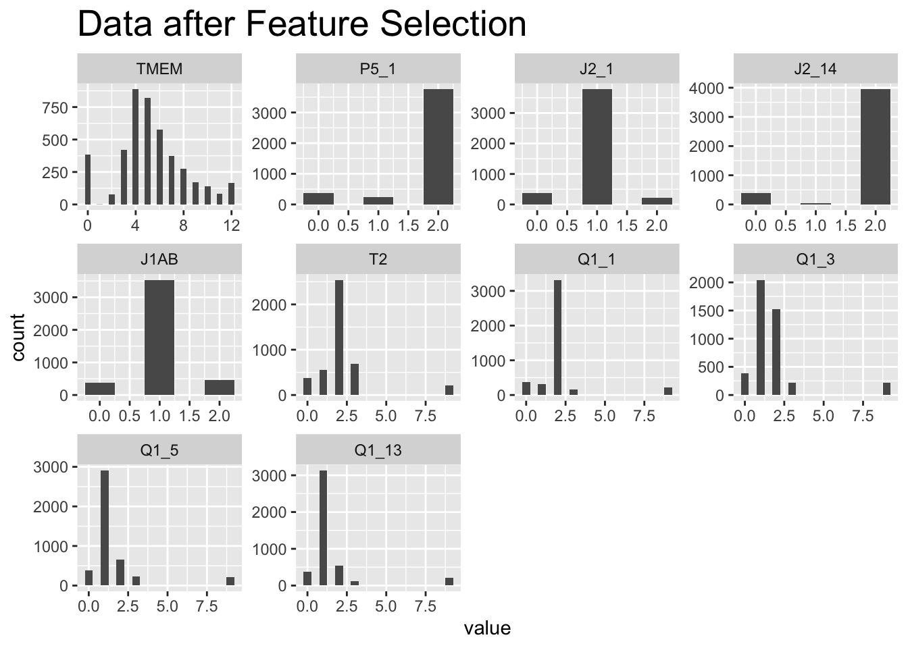

library(randomForest)randomForest 4.7-1.1Type rfNews() to see new features/changes/bug fixes.library(caret)Loading required package: ggplot2
Attaching package: 'ggplot2'The following object is masked from 'package:randomForest':
marginLoading required package: latticelibrary(stats)
library(glmnet)Loading required package: MatrixLoaded glmnet 4.1-8library(ggplot2)
library(dplyr)
Attaching package: 'dplyr'The following object is masked from 'package:randomForest':
combineThe following objects are masked from 'package:stats':
filter, lagThe following objects are masked from 'package:base':
intersect, setdiff, setequal, unionlibrary(reshape2)
options(warn = -1)
df <- read.csv("/Users/ishaanbabbar/dsan5300_project/new-cleaned_data-01.csv")
selected_df <- df %>% select(TMEM, P5_1, J2_1, J2_14, J1AB, T2, Q1_1, Q1_3, Q1_5, Q1_13)
selected_df[is.na(selected_df)] <- 0.01
#df_plot <- melt(df)
#ggplot(df_plot, aes(value)) +
#geom_histogram(binwidth = 0.5) +
#facet_wrap(~ variable, scales = "free") +
#labs(title = "Data before Feature Selection") + theme(plot.title = element_text(size = 25))
selected_df_plot <- melt(selected_df)No id variables; using all as measure variablesggplot(selected_df_plot, aes(value)) +
geom_histogram(binwidth = 0.5) +
facet_wrap(~ variable, scales = "free") +
labs(title = "Data after Feature Selection") + theme(plot.title = element_text(size = 20))